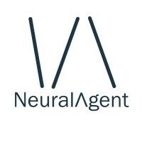
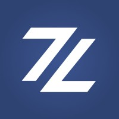
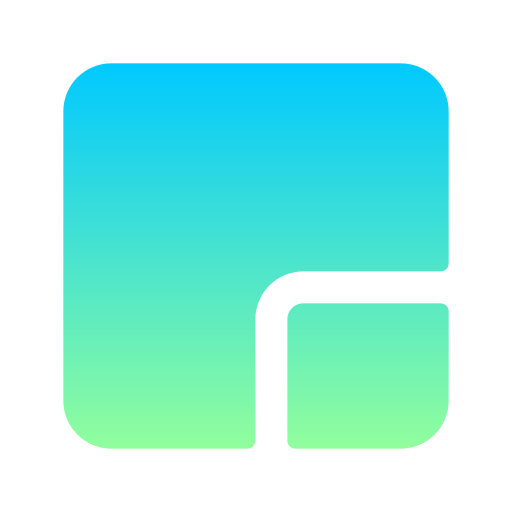
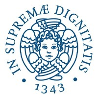
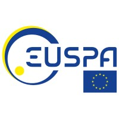
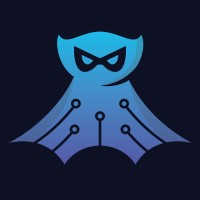
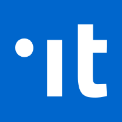

Work

Network Engineer R&D · NeuralAgent2024 — currentResearch Assistant · TUM - Chair of Connected Mobility2024

R&D Software Engineer Intern · Zerynth IoT2022 — 2023
Freelancer · Home2016 — 2018Education
M.Sc Computer Science & Engineering · CIT
TU München, Germany — Exchange semester

M.Sc Computer Science · ICT Solution Architect
University of Pisa, Italy
B.Sc Computer Science
University of Pisa, Italy
Fun

EU Space for Defence and Security 2024 · 3rd Place Winner, Czech Republic, ESA Innovation Centre

Mentee · Each mentor is a high-impact person from industries like Apple, Adobe, Epic Games, Meta, Microsoft, Netflix, Nvidia, Twitter

Hack.Developers Hackaton · "The power of Open Source is the power of the people. The people rule. – Philippe Kahn